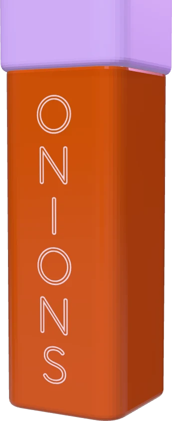

ONIONS
Capa por capa
Cuatro creadoras de BIG para ONIONS Profesional

Se pela una capa,después otra…y queda lo que cuida el pelo.
Cuatro creadoras
Fuente: roster BIG Agency España 2026.
Fuente: roster BIG Agency España 2026.
Fuente: roster BIG Agency España 2026.
Fuente: roster BIG Agency España 2026 y datos enviados por el equipo.
Una capa para cada una
Betlem
El champú de cebolla dentro de su rutina de rizos de Hair Bloom.
Lorena
Su ritual de ducha y autocuidado, con ONIONS como un paso más.
Clara
Pelo cuidado después del gimnasio y de correr, cuando se lava a diario.
Paula
Cuidarse el pelo con poco tiempo, entre prácticas y exámenes.
Lo definimos con ONIONS: mercado, piezas, calendario y presupuesto. A confirmar.
¿Pelamos la primera capa?
ContactoGonzalo Maass · BIG Agency
BIG Agency · España